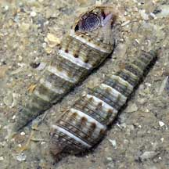
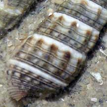
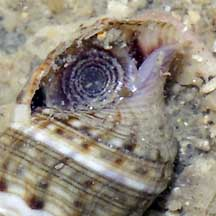
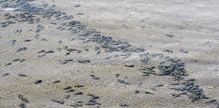
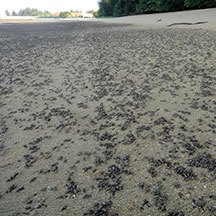
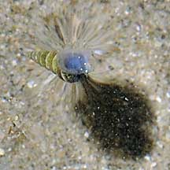
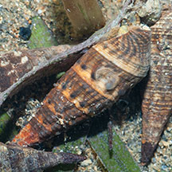
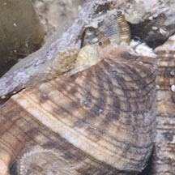

|
|
| shelled snails text index | photo index |
| Phylum Mollusca > Class Gastropoda |
| Bazillion
snail Batillaria zonalis Family Batillariidae updated Jul 2020 Where seen? This snail is commonly encountered in large numbers on many of our shores. In shallow sandy and slightly muddy areas which are sheltered from strong waves and currents, including the bottom of man-made lagoons, usually near the mid-water mark. It is said that they can reach densities of hundreds of snails per square metre. It was previously placed in the Family Potamididae. Features: 2-3cm. Shell conical with pattern of white spiralling lines with finer lines and large bumps. Shell opening oval, large, flared with upturned spout at the tip. Operculum is circular and made of a horn-like material with several circular whorls that are usually quite visible. The animal has fine bars on its mottled body, also on its proboscis and tentacles. Eyes at the base of the tentacles. |
 Sisters Islands, Feb 06 |
 Upturned siphonal canal near the opening |
 Circular operculum made of horn-like material. |
|
 Sometimes forming bands of many individuals. Tanah Merah, Dec 09 |
 Can cover large areas densely. Tanah Merah, May 11 |
|
| Sometimes, they are seen in 'bands' of many individuals. Small ones
have been seen floating on the water surface with the broad foot. Sometimes mistaken for Creeper snails (Family Cerithiidae). More on how to tell these snails apart. What does it eat? It eats detritus and grazes on the microscopic algae that grow on the bottom. |
|
 Seen floating on the water surface. Tanah Merah, Jun 09 |
 Tanah Merah, Dec 11 |
 A look at the living animal. |
| Bazillion snails on Singapore shores |
On wildsingapore
flickr
|
| Other sightings on Singapore shores |
| Family
Batillariidae recorded for Singapore from Tan Siong Kiat and Henrietta P. M. Woo, 2010 Preliminary Checklist of The Molluscs of Singapore.
|
Links
References
|